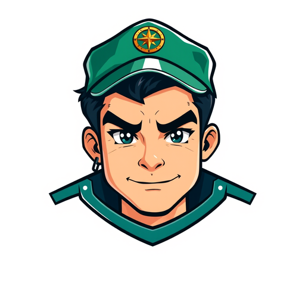

Vive el caso dos veces: como el comerciante que reporta y como el comandante que decide.

Un comerciante reporta una extorsión desde Telegram: fotos, video y audio, todo geolocalizado.
Más de 20 modelos de IA procesan imagen, video, audio y texto en menos de 2 segundos.
"Ayer como a las seis de la tarde llegó un tipo en moto, dejó un sobre en la puerta del local y se fue rápido. El sobre tenía un papel pidiendo dos millones o queman la tienda. Ya van tres vecinos que les pasa lo mismo."
Seguimiento espacio-temporal de la red: quién opera, dónde y con qué frecuencia.
Las autoridades reciben la alerta con toda la evidencia procesada.
Cada reporte activa a GusCoordina: seis agentes que articulan a las instituciones en tiempo real.
Seis agentes coordinan a las instituciones en tiempo real. Haz clic en cada uno.
Cada agente coordina una capacidad del PMU en tiempo real
9 fases que convierten incidentes en decisiones anticipativas. Haz clic en cada fase.
Cada fase muestra su propia visualización, sincronizada con la narración
Del celular del ciudadano al escritorio presidencial: así se articula la seguridad basada en datos.
Nuestro fundador diseñó, desplegó y propuso las estrategias basadas en sus modelos. Generales y alcaldes dieron las ruedas de prensa. Estos fueron los resultados.
Los modelos detrás de este ecosistema se aplicaron en operaciones reales de policía y gobierno, y quedaron documentados en publicaciones académicas revisadas.
PhD en Ingeniería Matemática (EAFIT) · Humphrey Fellow (University of Minnesota) · Becario Fulbright · 20+ años en analítica de seguridad ciudadana liderando equipos de más de 80 analistas · Autor de dos libros sobre seguridad y analítica de datos.